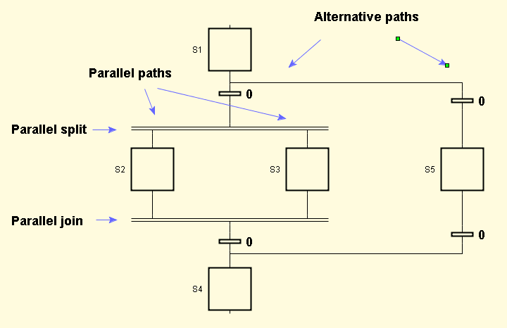

In Grafchart it is possible to express parallel and alternative paths.

There is no path or condition analysis in JGrafchart. Hence you must manually check that the conditions for alternative paths are mutually exclusive and that parallel paths are joined properly.
A convenient way to ensure mutual exclusion is to specify transition priorities. Transitions with higher priority (lower number) will inhibit transitions for alternative paths from firing.